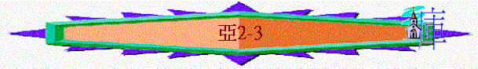

|
耶和華心�媟巨鉹齞� |
|||
|
為選民犯罪而大發烈怒 |
為重建錫安而極其火熱 |
為復興錫安而極其火熱 |
為彌賽亞國而親自成就 |
|
1:2-6 |
1:7-6:15 |
7-8 |
9-14 |
3.第三異象----準繩與量度----收回地土(2)
〜神對錫安的火熱不單是察看她的情況，打散她的敵人，更會收回地土，預備作重建及復興之用
A.為收回地土作準備
「我又舉目觀看，見一人手拿準繩。」2:1
「耶和華必收回猶大作他聖地的分，也必再揀選耶路撒冷。」2:12
〜「準繩」是用兩個字結構成的，直譯應為「量器」(h]ebel
middah)。準繩的目的，是量耶路撒冷有多寬多長，為何要量度，明顯神要收回此地，在此地重建祂的聖所。
B.當收回地土時光景
a.多人的居住
「對他說：「你跑去告訴那少年人說，耶路撒冷必有人居住，好像無城牆的鄉村，因為人民和牲畜甚多。」2:4
〜耶路撒冷的人與牲畜必增多，如無城牆的鄉村，無止境一般！
b.真神的親臨
(1)作聖城的保護
「耶和華說：我要作耶路撒冷四圍的火城，並要作其中的榮耀。」2:5
〜火城明顯是保護耶路撒冷(如火的城牆)
(2)作其中的榮耀
「日頭不再作你白晝的光；月亮也不再發光照耀你。耶和華卻要作你永遠的光；你神要為你的榮耀。」賽
60:19
(3)住在選民中間
「錫安城啊，應當歡樂歌唱，因為我來要住在你中間。這是耶和華說的。」那時，必有許多國歸附耶和華，作他（原文作我）的子民。他（原文作我）要住在你中間，你就知道萬軍之耶和華差遣我到你那裡去了。耶和華必收回猶大作他聖地的分，也必再揀選耶路撒冷。」2:10-12
「耶和華的分本是他的百姓；他的產業本是雅各。」申
32:9
〜神在他們中間，令他們歡喜；而猶大地是祂的產業，祂必收回。
(4)多國歸附真神
(5)神從聖所出來
「凡有血氣的都當在耶和華面前靜默無聲；因為他興起，從聖所出來了。」2:13
「惟耶和華在他的聖殿中；全地的人都當在他面前肅敬靜默。」哈
2:20
∼「前靜默無聲」代表對神一份尊敬
∼「從聖所出來」代表會猶太地會有聖所，聖殿會被建立，神會在聖所中出來
∼當然以上情景未完全應驗，即或以色列在歷史中曾被重建，但至今我們仍未見到多國歸附以色列，所以以上的應許也指向將來的國度（千禧年）
c.仇敵的遭報
「耶和華說：「我從前分散你們在天的四方（原文作猶如天的四風），現在你們要從北方之地逃回。這是耶和華說的。與巴比倫人同住的錫安民哪，應當逃脫。萬軍之耶和華說，在顯出榮耀之後，差遣我去懲罰那擄掠你們的列國，摸你們的就是摸他眼中的瞳人。看哪，我（或作：他）要向他們掄手，他們就必作服事他們之人的擄物，你們便知道萬軍之耶和華差遣我了。」2:6-9
∼「北方之地」是巴比倫人居住的地方，與他們同住的以色列人是一切被擄者。
〜「掄手」原文指握拳掉手，恐嚇的舉動；「瞳人」表示神看為寶貴的選民。
〜神要懲罰擄掠選民的列國，所以選民應逃離這些國歸回耶路撒冷。
4.第四異象----撒但敵約書亞----建立祭司(3)
〜要建立聖殿，需要祭司，當時以色列的仇敵攔阻祭司建殿，神要令約書亞剛強起來，所以引出這異象。
A.撒但敵對約書亞
「天使（原文作他）又指給我看：大祭司約書亞站在耶和華的使者面前；撒但也站在約書亞的右邊，與他作對。」3:1
「於是撒拉鐵的兒子所羅巴伯和約薩達的兒子耶書亞都起來動手建造耶路撒冷神的殿，有神的先知在那裡幫助他們。」拉5:2
〜大祭司約書亞（耶書亞），為約薩達的兒子，約薩達是西萊雅的兒子。在主前587年耶路撒冷被毀時，西萊雅是當時的大祭司。他被巴比倫王在哈馬地的利比拉被殺。他的兒子約薩達被擄至巴比倫。因此約薩達的兒子約書亞，在巴比倫長大。在歸回故土時，約書亞以大祭司的身分，與所羅巴伯一同回去，他們二人都是世襲的。是當時宗教首領，建殿的關鍵人物，而撒但（有敵人的意思）站在約書亞右邊，類似站在猶太法庭中控方位置，牠可能在神面前捁告約書亞，或想出巧計攔阻他的工作。
B.神為約書亞熱心
a.責備撒但
「耶和華向撒但說：「撒但哪，耶和華責備你！就是揀選耶路撒冷的耶和華責備你！這不是從火中抽出來的一根柴嗎？」」3:2
「我傾覆你們中間的城邑，如同我從前傾覆所多瑪、蛾摩拉一樣，使你們好像從火中抽出來的一根柴；你們仍不歸向我。這是耶和華說的。」摩4:11
〜神為「約書亞」出面，責備撒但
〜「這不是從火中抽出來……」應指約書亞，或引申餘民。
〜他們從前已被神傾覆，現在只利下餘民，神責備撒但，牠還要攻擊利下來的，沒有絲毫憐憫之心。
b.建立約書亞
(1)分別為聖
「使者吩咐站在面前的說：「你們要脫去他污穢的衣服」；又對約書亞說：「我使你脫離罪孽，要給你穿上華美的衣服。」3:4
〜撒但可能在神面前控告約書亞不潔，不配事奉神
〜但神卻除掉約書亞的罪污，用聖衣使他分別為聖，可在神面前事奉神。
(2)勉勵行道
「耶和華的使者告誡約書亞說：「萬軍之耶和華如此說：你若遵行我的道，謹守我的命令，你就可以管理我的家，看守我的院宇；我也要使你在這些站立的人中間來往。」3:6-7
〜神鼓勵他遵行主的吩咐(可能包括建殿)，神就會繼續用他，可在神家中事奉。
(3)賜下應許
「大祭司約書亞啊，你和坐在你面前的同伴都當聽。（他們是作預兆的。）我必使我僕人大衛的苗裔發出。」3:8
〜作為祭司，最渴慕自己事奉有甚麼成效呢？當然他希望給有一日看見神的殿被建立，另外，祭司的工作是幫百姓除罪及為百姓祝福。
〜神應許將來必有「大衛的苖裔發出」，應指耶穌基督----大衛的後裔，祂將會成就祭司們的心願。
(A)聖殿建成
「看哪，我在約書亞面前所立的石頭，在一塊石頭上有七眼。萬軍之耶和華說：我要親自雕刻這石頭，並要在一日之間除掉這地的罪孽。」3:9
「所以，主耶和華如此說：看哪，我在錫安放一塊石頭作為根基，是試驗過的石頭，是穩固根基，寶貴的房角石；信靠的人必不著急。」賽
28:16
〜「七眼」代表神的全知與看守
〜「石頭」可能是指基石，此預言有雙重預表，第一預表約書亞時代的殿可以被建立，神必會看守著，另外，也可預表將來基督成為教會的房角石，祂是教會的根基，建立教會者。
(B)百姓得潔
〜可能也有雙重預表，第一預表主第一次來臨，成就新約，可使人靠主血得潔淨，第二是預表將來主第二次回來，使以色列全家得救，也除掉世人的罪惡。
(C)人民安定
「當那日，你們各人要請鄰舍坐在葡萄樹和無花果樹下。這是萬軍之耶和華說的。」」3:10
「人人都要坐在自己葡萄樹下和無花果樹下，無人驚嚇。這是萬軍之耶和華親口說的。」彌4:4
〜在葡萄樹下，指百姓得神賜福，生活安定，無人驚嚇。